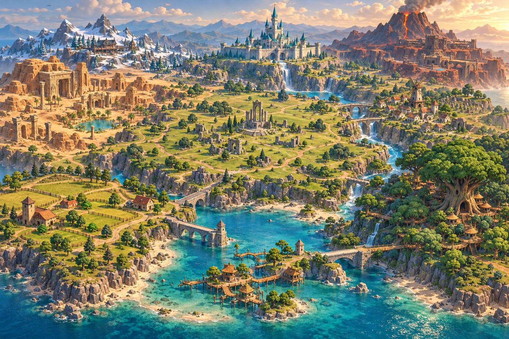
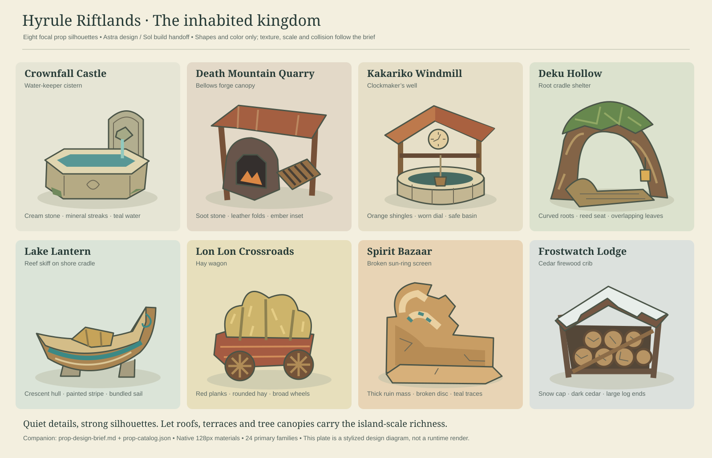

Hyrule Riftlands
Approved visual target • Zelda atmosphere, Zero Build rotations • proposed layout, not exported coordinates

Scenery props / Astra design

Prop modeling and placement brief
01 / Island routes and landmarks
Gold: connected buggy road and radial routes. Blue: river and lake. Dashed green: alternative foot routes. White bars: bridge decks. Each landmark has ground approaches; heights and cover require greybox testing.
02 / Kakariko encounter pattern
Three exits, two building entrances, ordinary roof access, and a boss annex with an escape route. The same pattern guides all primary POIs. No essential loot sits behind a mandatory boss fight.
Design rationale · Detail checklist and implementation gates · Recovered fix list